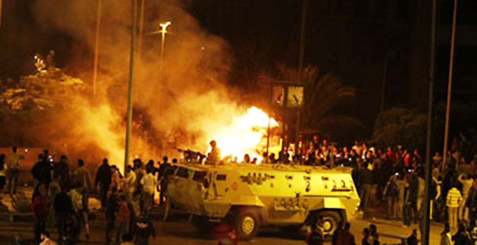

22 4. Das Massaker von Mokattam /Kairo Foto: Algazira 9.3.111_1046552_1_34[1] März 2011: Massaker in der Müllsammlersiedlung - mindestens 14 Tote, mehr als 150 Schwerverletzte (meist Christen) - 100 Wohnungen,10 Häuser, 15 Recyclingbetriebe, 50 Fahrzeuge zerstört Das Militär schützt die Angreifer! 5. Angriff auf Kirchen in Imbaba Nach: http://de.wikipedia.org/wiki/Angriff_auf_die_Kirchen_von_Imbaba Der Kairoer Stadtteil Imbaba war am 7. Mai 2011 Ziel einer Serie von Angriffen, die gegen koptische Kirchen in diesem Arbeiterviertel gerichtet waren. Die blutigen Attacken wurden von salafistischen Muslimen durchgeführt und begannen um 16 Uhr Ortszeit, als zunächst die koptisch-orthodoxe St.-Mina-Kirche attackiert wurde. Die Angreifer behaupteten, dass ein christliches Mädchen, das angebllich zum Islam konvertieren wollte, gegen seinen Willen dort festgehalten worden sei. Bei den Angriffen wurden 3 historische koptische Kirchen vollständig niedergebrannt und viele christliche Häuser sowie Geschäfte zerstört
St. Markus · 2015 · Deutsch
اإليجابية فى الحياة المسيحية-
Ausgabe 1 · Seite 22
